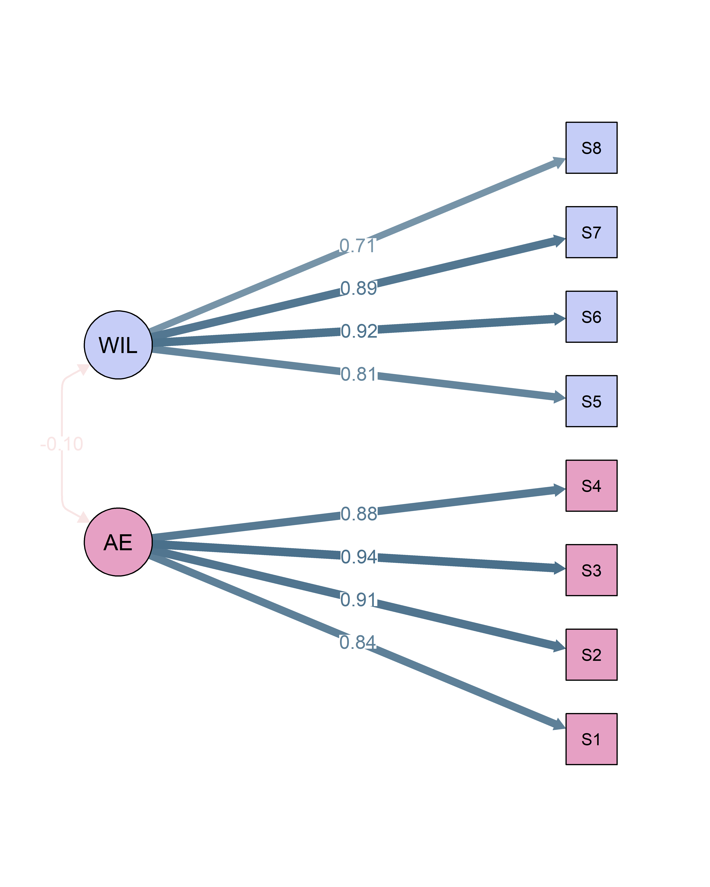

Preliminary evidence for a new measure of Sleep Acceptance: a promising tool for clinicians and researchers.
Translation and validation of the Sleep Problem Acceptance Questionnaire (SPAQ) with a Brazilian sample
Marwin M. I. B. Carmo, MSc 3
mmcarmo@ucdavis.edu
Leo Paulos-Guarnieri 1
guarnieri.leo@usp.br
Maria Laura Nogueira Pires, PhD 2
laurapires@actigrafia.org
Renatha El Rafihi Ferreira, PhD 1
rerafihi@usp.br
1 Department of Psychiatry, University of São Paulo, Brazil
2 Private practice in sleep psychology
3 Department of Psychology, University of California, Davis
Introduction
Acceptance is essential as a therapeutic process for dealing with sleep problems. The Sleep Problem Acceptance Questionnaire (SPAQ) is an 8-itens psychometric instrument that measures the acceptance of sleep difficulties. The SPAQ contains the subscales “Activity Engagement” and “Willingness,” with four items composing each factor; respondents rate them on a 7-point scale, where 0 means “Disagree,” and six indicates “Completely agree.”
Objective
This study developed a Brazilian-Portuguese of the Sleep Problem Acceptance Questionnaire, examined its factor structure, reliability, and construct validity
Methods
Data were collected from online surveys responded by 1352 participants, aged 18 to 59 years, with and without insomnia symptoms. Participants completed self-report questionnaires, including:
- Hospital Anxiety and Depression Scale (HADS);
- Insomnia Severity Index (ISI);
- Dysfunctional Beliefs and Attitudes about Sleep Scale (DBAS-16);
- Acceptance and Action Questionnaire (AAQ-II).
The SPAQ was translated into Portuguese by three independent translators. The translations were synthesized into a single version by a committee composed of insomnia experts. A pilot study with 15 participants demonstrated that the target population understood the content of the scale.
We ran a Confirmatory Factor Analysis to obtain fit statistics and parameter estimates, using the Diagonally Weighted Least Squares (DWLS) estimator, considering items to be ordered.
Reliability indices for each of the facets were obtained using Cronbach’s \(\alpha\) and McDonald’s \(\omega\). We assessed construct validity by examining the latent correlations with variables known to be linked with insomnia.
We also examined whether our scale’s psychometric properties were equal across time points, comparing baseline test scores to a second administration taken 14 days later.
Results
The 2-factor model showed a good fit to our sample [\(\chi^2\)(19) = 253.97, p < .001 RMSEA = 0.096 [0.09, 0.106]; CFI = 0.973; RNI = 0.973; TLI = 0.96].
Internal consistency was good for Activity Engagement (\(\alpha\) = 0.94 [0.93, 0.94], \(\omega\) = 0.94 [0.93, 0.94]) and Willingness (\(\alpha\) = 0.9 [0.89, 0.91], \(\omega\) = 0.9 [0.9, 0.91]).
The two subscales were weakly and negatively correlated (r = -0.098). Both factors also showed negative moderate to strong correlations with measures of insomnia severity, anxiety and depression.
Tests of longitudinal invariance shows that the scale measurement properties were maintained across 14 days.
| N (%) | |
|---|---|
| Sex Male (%) | 264 (19.5) |
| Age [mean (SD)] | 38.51 (9.78) |
| Race (%) | |
| Asian | 47 ( 3.5) |
| Black | 322 (23.8) |
| Other/Not informed | 13 ( 1.0) |
| White | 970 (71.7) |
| Educational Level (%) | |
| College degree or higher | 1053 (77.9) |
| Primary School | 16 ( 1.2) |
| Secondary School | 283 (20.9) |
| Occupation (%) | |
| Employed | 1039 (76.8) |
| Retired | 29 ( 2.1) |
| Student | 166 (12.3) |
| Unemployed | 118 ( 8.7) |
| Region (%) | |
| Central-West | 27 ( 2.0) |
| North | 34 ( 2.6) |
| Northeast | 103 ( 7.8) |
| South | 110 ( 8.3) |
| Southeast | 1044 (79.2) |
| Variable | 1 | 2 | 3 | 4 | 5 |
|---|---|---|---|---|---|
|
1.000 | ||||
|
-.098 | 1.000 | |||
|
-.159 | -.752 | 1.000 | ||
|
-.452 | -.426 | .638 | 1.000 | |
|
-.323 | -.509 | .716 | .802 | 1.000 |
| Model | \(\Delta\chi^2\) | \(\Delta\)df | \(\it{p}\)-value | \(\Delta\)RMSEA | \(\Delta\)CFI | \(\Delta\)AIC | \(\Delta\)BIC |
|---|---|---|---|---|---|---|---|
| Configural | 331.26 | 90 | <.001 | .0566 | .9807 | 60283 | 60595 |
| Metric | 1.51 | 6 | .96 | .0020 | -.0001 | 10 | 40 |
| Scalar | 17.54 | 6 | .01 | .0003 | .0010 | -10 | 20 |
| Strict | 7.54 | 8 | .48 | .0013 | .0006 | -10 | 30 |
| Note. Differences to each preceding constraint level. |

Conclusion
These findings suggest that the SPAQ is a valid tool for assessing the acceptance of sleep with a Brazilian-Portuguese speaking population. However, due to the low correlation between the two subscales, researchers should refrain from interpreting a total sum score and consider these as individual factors.
Items
Embora as coisas tenham mudado, estou vivendo uma vida normal apesar dos meus problemas de sono.
Eu levo uma vida plena apesar de ter problemas de sono.
Minha vida está indo bem apesar dos meus problemas de sono.
Apesar dos problemas de sono, agora estou seguindo um certo curso na minha vida.
Manter meus problemas de sono sob controle é minha maior prioridade.
Eu preciso me concentrar em me livrar dos meus problemas de sono.
É importante eu continuar lutando contra meus problemas de sono.
Meus pensamentos e sentimentos sobre meus problemas de sono devem mudar antes de eu dar passos importantes na minha vida.